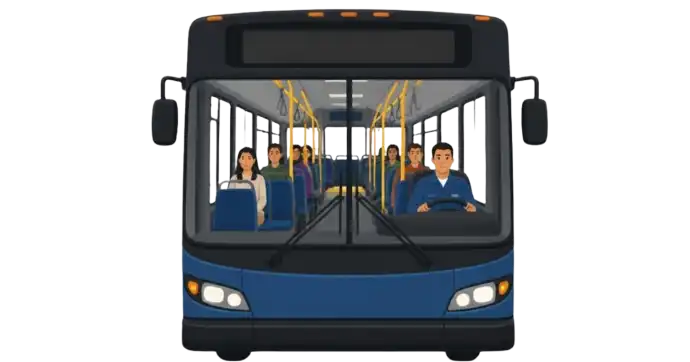

Оформіть захист для пасажирів і водія
Напишіть нам — підберемо страхову суму й систему покриття під ваші потреби.

Поліс від нещасного випадку на транспорті покриває захист життя та здоров'я пасажирів і водія одразу — без з'ясування вини, без судових процесів. Діє в автобусі, мікроавтобусі, таксі чи легковому авто, в Україні та за кордоном.

Приклад: для мікроавтобуса зі страховою сумою 250 000 грн річна премія складає близько 2065 грн — менш ніж 6 грн на день.
Страхування від нещасних випадків на транспорті
Це страхування класу «нещасний випадок»: об'єкт захисту — життя, здоров'я і працездатність людини, яка в момент події перебувала в застрахованому транспортному засобі. Страховим випадком визнається дорожньо-транспортна пригода, стихійне лихо, напад тварин на транспортний засіб, пожежа чи самозаймання — коротко кажучи, будь-яка раптова й непередбачувана подія в дорозі, що призвела до травми або смерті.
Договір укладається на строк до одного року і набирає чинності наступного дня після сплати премії. Територія дії — весь світ, за винятком територій бойових дій, тимчасово окупованих зон і місцевостей з надзвичайним станом, що робить продукт зручним і для внутрішніх, і для міжнародних маршрутів.
Перелік ризиків, які фактично увійдуть у поліс, і їхню комбінацію страхувальник обирає сам — і саме від цього вибору залежить тариф.
Розмір виплати
Виплата розраховується у відсотках від страхової суми, встановленої в договорі, і залежить від тяжкості наслідків нещасного випадку.
Виплата за тимчасову непрацездатність нараховується починаючи з шостого дня лікарняного, не більш ніж за 30 днів по одному випадку і не більш ніж за 90 днів на рік сумарно.
Страхування водія і пасажирів
Договір встановлює одну з двох систем — і від обраної системи залежить, як саме буде розподілено виплату між людьми в салоні.
Страхова сума фіксується на весь транспортний засіб. У разі події вона ділиться порівну між усіма, хто фактично перебував у салоні — пасажирами і водієм разом. Якщо в момент пригоди в салоні була лише одна людина, виплата обмежується 40% страхової суми.
Страхова сума встановлюється на кожне місце окремо, відповідно до кількості місць у технічному паспорті транспортного засобу. Місце водія може мати іншу суму, ніж пасажирські місця, за домовленістю сторін.
Відповідальність перевізника
| Страхування від нещасного випадку | Відповідальність перевізника | |
|---|---|---|
| Хто отримує виплату | Пасажир або водій особисто, чи вигодонабувач | Постраждала третя сторона, через перевізника |
| Чи потрібно доводити вину | Ні — виплата за фактом травми | Так, у межах встановленої відповідальності |
| Що покриває | Смерть, інвалідність, непрацездатність | Заподіяну шкоду третім особам |
Ці два види доповнюють одне одного. Обов'язкове страхування відповідальності перевізника захищає перевізника від претензій, а страхування від нещасного випадку на транспорті — це пряма турбота про людину в салоні, яка діє швидше й не залежить від з'ясування обставин.
Страхування пасажирських перевезень
Автобусні та маршрутні компанії, які возять пасажирів на регулярних чи разових рейсах і хочуть закрити ризик нещасного випадку одним договором на весь парк.
Компанії, що організовують виїзні тури й трансфери мікроавтобусами — територія дії поліса покриває весь світ, окрім зон із підвищеним ризиком.
Легкові перевізники, для яких страхова сума встановлюється на місце водія і кожне пасажирське місце окремо.
Підприємства, що возять власним транспортом працівників — службовий трансфер прирівнюється до перевезення пасажирів.
Міжнародне страхування пасажирів
Захист діє на території всього світу, поки застрахована особа перебуває у вказаному в договорі транспортному засобі. Винятком є Автономна Республіка Крим, місто Севастополь, тимчасово окуповані території, лінія зіткнення та райони бойових дій, а також місцевості з офіційно оголошеним надзвичайним станом.
Для перевізників, що працюють на міжнародних маршрутах, чи туристичних компаній із закордонними турами це означає одне покриття без потреби купувати окремий поліс для кожної країни в'їзду.
Страховка на пасажирів
Письмова заява страховику про факт і обставини події подається протягом трьох робочих днів з дня настання нещасного випадку.
Медичні довідки, висновок про встановлення групи інвалідності або свідоцтво про смерть, акт компетентного органу про обставини події.
Не пізніше 5 робочих днів після завершення лікування чи встановлення інвалідності, або 7 місяців після дати смерті.
Страховик приймає рішення протягом 10 робочих днів після отримання документів, складає страховий акт і здійснює виплату протягом наступних 10 робочих днів.
Питання і відповіді
Так, водій захищений нарівні з пасажирами. У паушальній системі його частка виплати входить до загальної страхової суми на транспортний засіб; у системі посадкових місць для водія може бути встановлена окрема сума.
Не покриваються події, що сталися через керування транспортом у стані сп'яніння, навмисні дії чи грубу необережність застрахованої особи, перевищення кількості пасажирів понад визначену в техпаспорті, а також події воєнного характеру чи в зонах бойових дій.
Так, протягом 30 календарних днів з дня укладення можна відмовитися без пояснення причин, якщо строк дії договору перевищує 30 днів і подія, що має ознаки страхового випадку, ще не заявлена.
Премія розраховується як добуток страхової суми та тарифу, який залежить від обраного переліку ризиків, типу транспортного засобу і кількості посадкових місць.
Напишіть нам — підберемо страхову суму й систему покриття під ваші потреби.